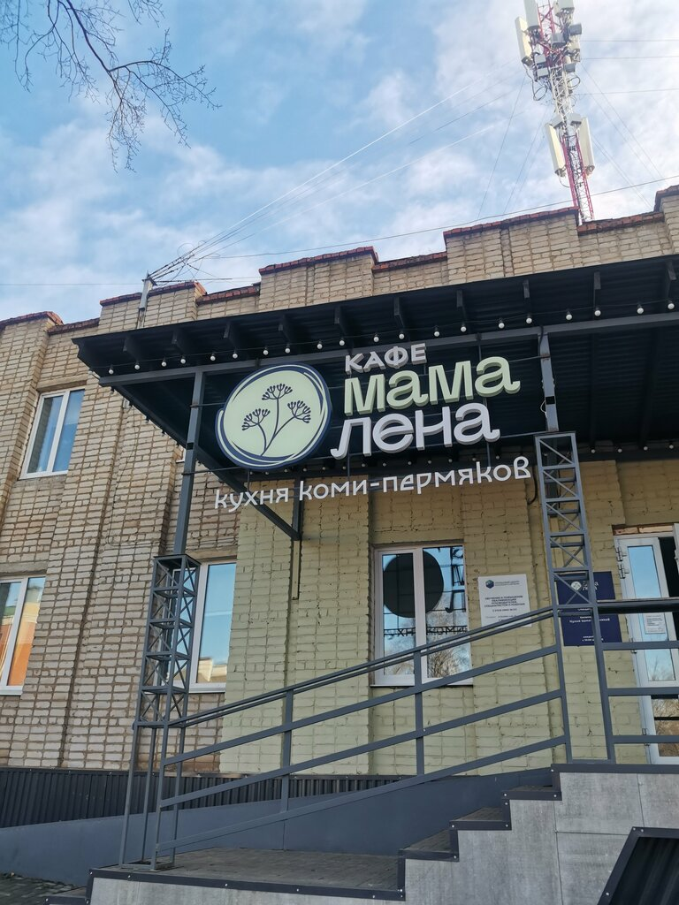

Коми-пермяцкие традиции
Узнайте о кухне кафе и его новостях в сообществе.
Семейное кафе, где можно встретиться за коми-пермяцкой кухней и провести время вместе.
«Мама Лена» — семейное кафе в Кудымкаре. В меню кафе — коми-пермяцкая кухня.
Загляните в сообщество кафе, чтобы узнать больше и посмотреть актуальные публикации. По вопросам визита можно позвонить напрямую.
Актуальная информация о меню и публикациях — в официальном сообществе кафе.
Узнайте о кухне кафе и его новостях в сообществе.
Кафе для семейных встреч в Кудымкаре.
Позвоните, чтобы уточнить детали перед визитом.
Кудымкар, улица Калинина, 35. Открыть маршрут ↗
Актуальные публикации доступны в сообществе «Мама Лена» ВКонтакте.
Позвоните по номеру +7 (992) 213-70-45.
